pt cm
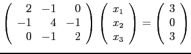
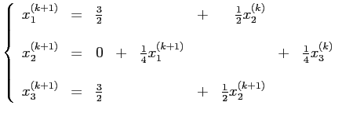
et la matrice d'itération
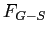
est
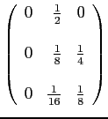
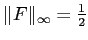
. Ainsi, pour
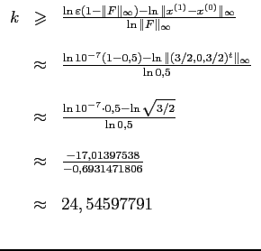
On doit donc faire 25 itérations de Gauss-Seidel pour obtenir la précision souhaitée.
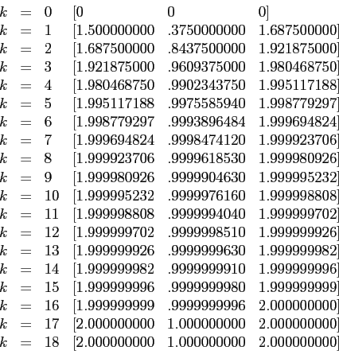
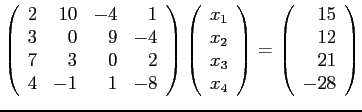
Permutons d'abord les lignes du système d'équation pour obtenir le nouveau système
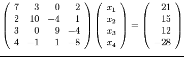
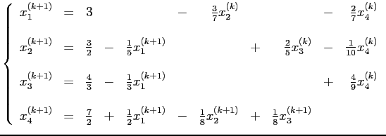
et la matrice d'itération est
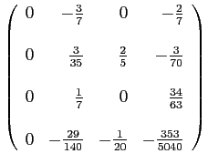
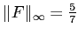
. Ainsi, pour
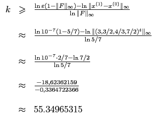
On doit donc faire 56 itérations de Gauss-Seidel pour obtenir la précision souhaitée.
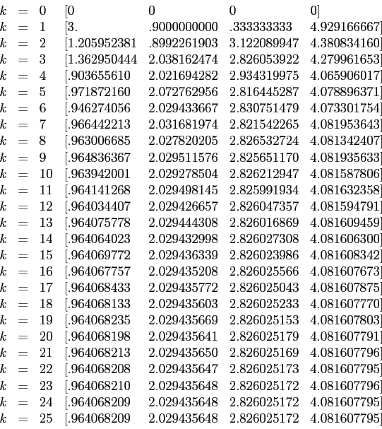
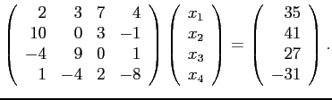
Permutons d'abord les lignes du système d'équation pour obtenir le nouveau système
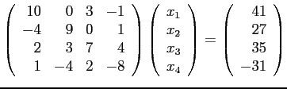
On obtient les équations de Gauss-Seidel
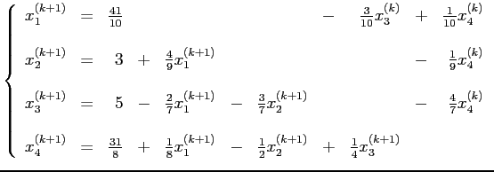
et la matrice d'itération est
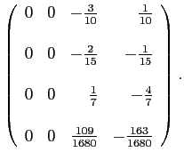
Comme la matrice  est à dominance diagonale stricte, on est assuré de la convergence.
est à dominance diagonale stricte, on est assuré de la convergence.
On sait de plus que
. Ainsi, pour
 ,
on a
,
on a
On doit donc faire 56 itérations de Gauss-Seidel pour obtenir la précision souhaitée. Remarquons que si nous avions plutôt utilisé la norme 1, on aurait eu que
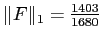
, que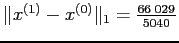
, ce qui aurait demandé au moins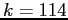
itérations.On obtient à 10 chiffres significatifs les itérés successifs
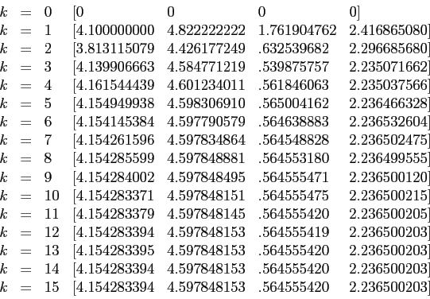
Si on compare avec les résultats de la question 5 du laboratoire 5, on remarque que la convergence avec la méthode de Gauss-Seidel est plus rapide qu'avec la méthode de Jacobi. Cela est dû au fait que le rayon spectral de
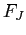
est de 0,4264607133 et que celui de n'est que de 0,1523623501.
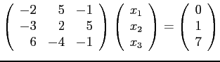
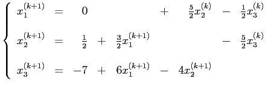
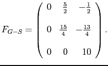
Il est clair que
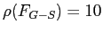
et alors le système ne peut converger.
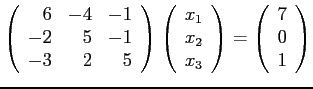
On obtient alors
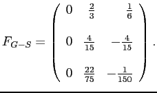
qui a comme rayon spectral la valeur 0,3373425559. Le système est donc convergent.
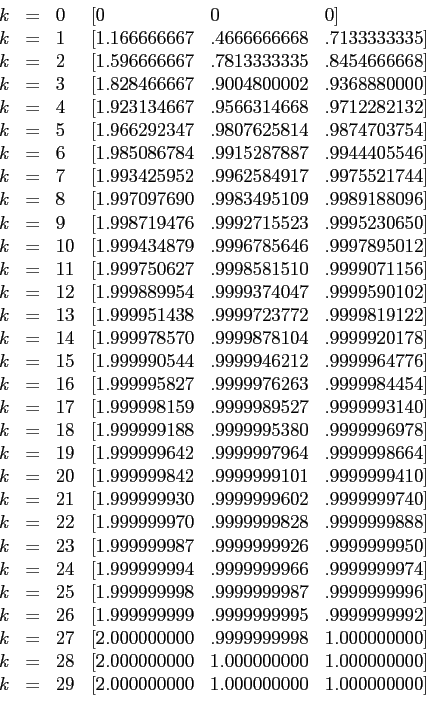
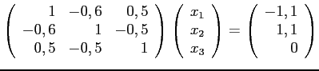
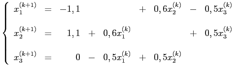
et les équations de Gauss-Seidel sont
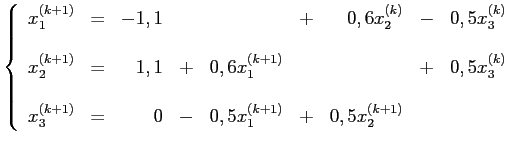
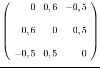
Comme son rayon spectral est
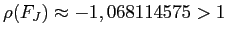
, on en déduit que le système diverge.
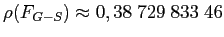
, on sait que la méthode itérative de Gauss-Seidel converge. On obtient les itérés successifs
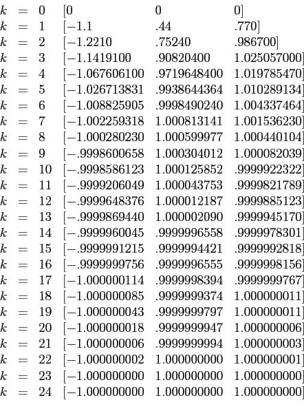
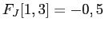
), on ne peut appliquer le théorème.